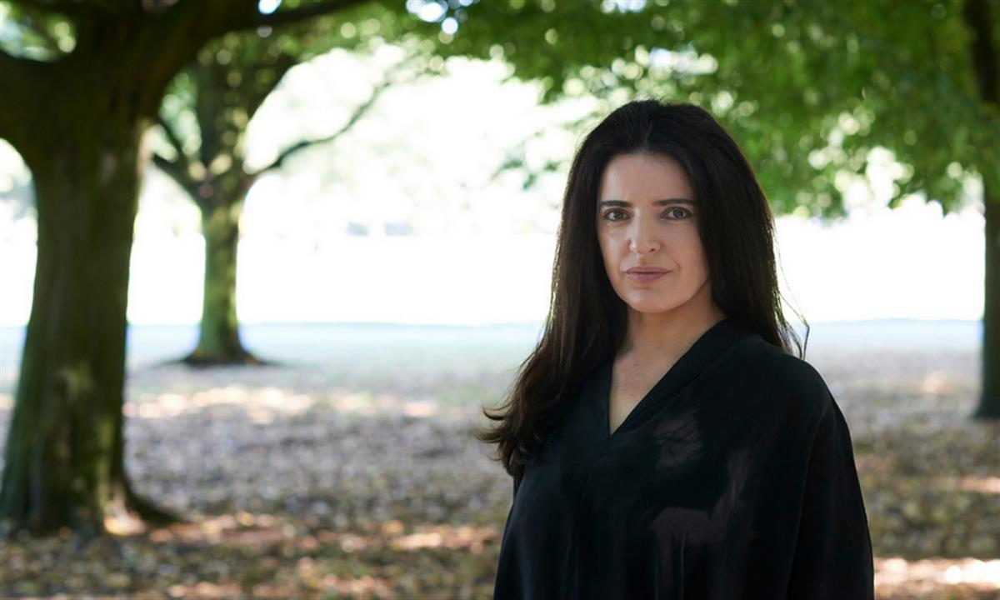

Voices above the chaos: female war poets from the Middle East
The Syrian city of Aleppo crumbles into rubble, assailed by Russian bombs, government artillery and chemical weapons. In the heat of battle, Turkish troops and Kurdish fighters turn on one another, fighting their age-old war, though both are supposed to be fighting a common enemy, Islamic State (Isis), advancing on the battered, tortured civilians of Aleppo and other Syrian and Kurdish communities in a murderous pincer movement.
So the Middle East continues to implode – but amid the chaos emerges a further force, perhaps incredibly, a poetic and literary one. It comes in defiant journalism, like the story televised last week of a gardener in Aleppo who was killed by bombs while tending his roses and his son, who helped him, orphaned.
And it comes in the verses of two female poets, part of an emergent school of verse, much of it written by women: Bejan Matur and Maram al-Masri – Kurdish and Syrian respectively. Matur and Masri are the two most illustrious and cogent of this new generation of female poets; their verse combines to create a devastating but richly composed verbal landscape that it is at once epic and intensely human. Raw and lyrical, of the moment but seeped in the memories of their people, immediate and for ever.
SOURCE - THE GUARDIAN - READ MORE

Bejan Matur: ‘Poetry is about finding another way.’ Photograph: Suki Dhanda for the Observer
Syrian poet Maram al-Masri in Paris. ‘The world of my heart has become vast. It started with the revolution.’ Photograph: Magali Delporte/Picturetank